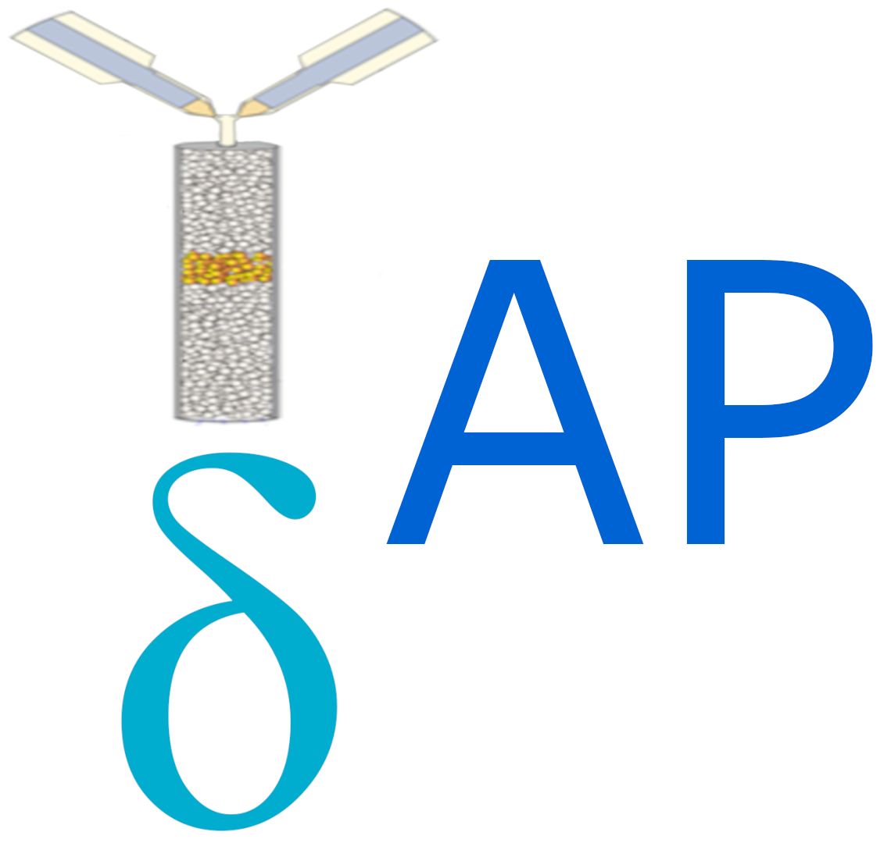

Welcome to tapsap’s documentation!¶
{kind=link}
Temporal analysis of products statistical analysis package (tapsap) is a package for reading, cleaning, analyzing and making inference of temporal analysis of products (TAP) information. This package is designed with the intent for collaboration within the TAP community for advancing TAP analysis.
This software may be used in conjunction to other existing python TAP softwares such as TAPsolver developed by Adam Yonge of Georgia Institute of Technology [TAPsolver](https://github.com/medford-group/TAPsolver).
Funding¶
Financial support for the development of TAPsolver was provided by the U.S. Department of Energy (USDOE), Office of Energy Efficiency and Renewable Energy (EERE), Advanced Manufacturing Office Next Generation R&D Projects under contract no. DE-AC07-05ID14517.
Other Software¶
Idaho National Laboratory is a cutting edge research facility which is a constantly producing high quality research and software. Feel free to take a look at our other software and scientific offerings at:
[Primary Technology Offerings Page](https://www.inl.gov/inl-initiatives/technology-deployment)
[Supported Open Source Software](https://github.com/idaholab)
[Raw Experiment Open Source Software](https://github.com/IdahoLabResearch)
[Unsupported Open Source Software](https://github.com/IdahoLabCuttingBoard)
License¶
Copyright 2021 Battelle Energy Alliance, LLC
Licensed under the GPL 2 (the “License”); you may not use this file except in compliance with the License. You may obtain a copy of the License at
Unless required by applicable law or agreed to in writing, software distributed under the License is distributed on an “AS IS” BASIS, WITHOUT WARRANTIES OR CONDITIONS OF ANY KIND, either express or implied. See the License for the specific language governing permissions and limitations under the License.